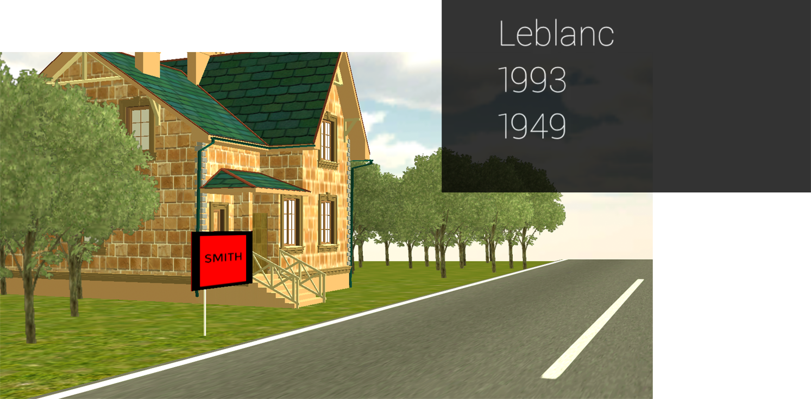

Research Focus
Advancing the Field of HCI
Building a new generation of "implicit" brain-computer interfaces.

Key Computational Techniques
fNIRS: a non-invasive neuroimaging technique that measures brain activity by shining light into the brain to track blood oxygenation changes

Implicit and Adaptive User Interfaces
Interfaces that respond in real time without the user explicitly thinking about it